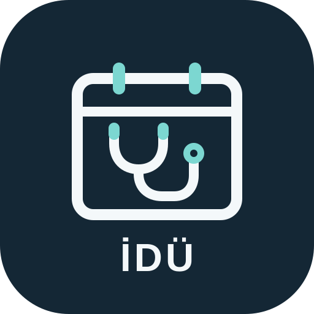
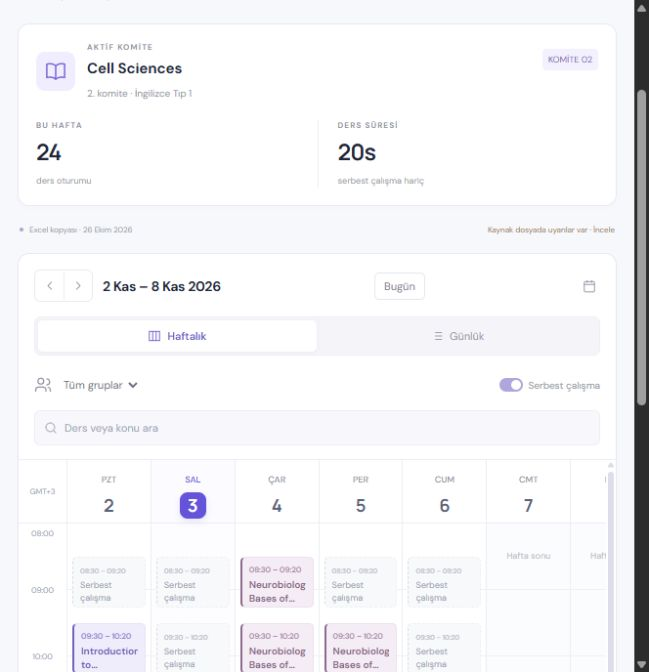

İDÜ CampusResmî ve karmaşık Excel tablolarında ders aramaya son. İzmir Demokrasi Üniversitesi Tıp 1. Sınıf için tasarlanan, devamsızlık barajını kuruşu kuruşuna hesaplayan, ders ertelemelerine uyum sağlayan ve çevrimdışı çalışan akıllı kampüs asistanı.

Yatay zaman akışı, anabilim dallarına özel renkler, komite sınavı geri sayımı ve ders saati çakışma uyarıları tek ekranda.
Tıp öğrencilerinin amfilerde ve laboratuvarlarda bizzat yaşadığı zorluklar düşünülerek tasarlandı.
Hoca kararıyla veya sınıfça ertelenen dersleri takvimde dilediğin güne/saate taşı! 3D raptiye ve kıvrık kağıt görünümüyle ertelemeleri asla kaçırma.
Tıp yönetmeliğine uygun %30 Teorik ve %20 Pratik baraj hesabı. Kalan devamsızlık hakkını ve kritik risk uyarılarını anbean takip et.
E-posta yok, telefon yok. Yalnızca dilediğin kullanıcı adı ve sistemin ürettiği 4 haneli PIN ile oturum aç. 400ms hızında Cloudflare D1 senkronizasyonu.
Amfilerde internet çekmediğinde bile son açılan program saniyede açılır. Sıfır dış kütüphane bağımlılığı ve 150 KB'ın altında ultra hafif mimari.
Aktif komite sınavına kaç gün kaldığını, komitedeki toplam teorik/pratik saatlerini ve anabilim dallarının soru ağırlıklarını tek bakışta gör.
Bir hata veya öneri bildirdiğinde sana özel üretilen takip koduyla yöneticinin inceleme durumunu ve yanıtını canlı takip et.
App Store veya Play Store'a gerek duymadan, saniyeler içinde ana ekranına ekle.
v1.0.0 prototipinden v1.8.3 canlı senkronizasyon aşamasına kadar adımlarımız.